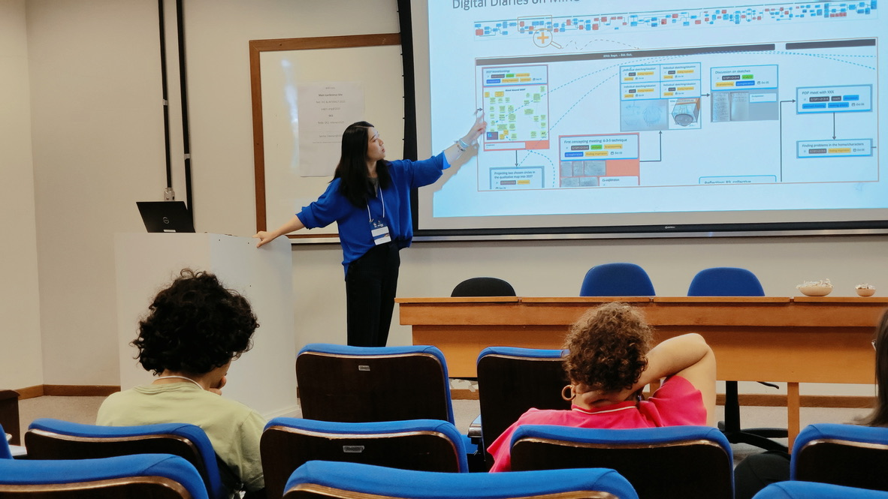
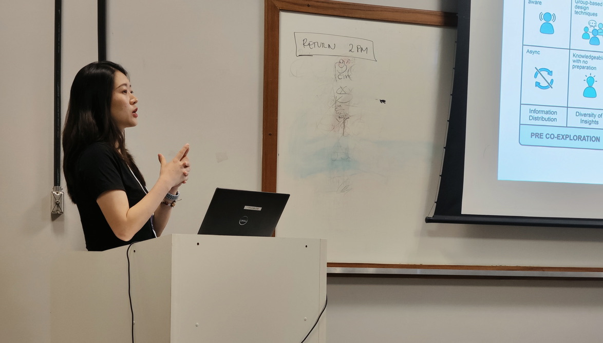
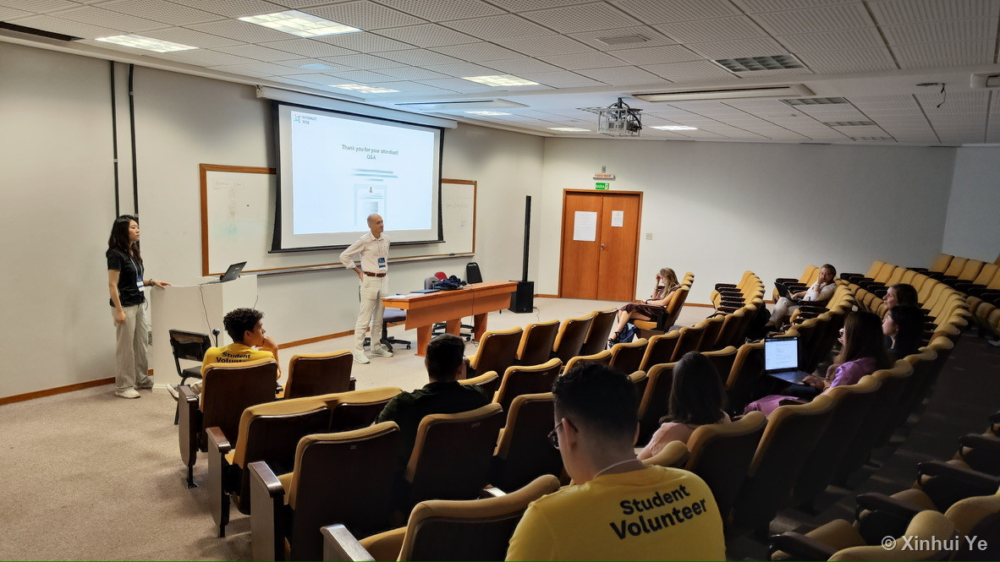
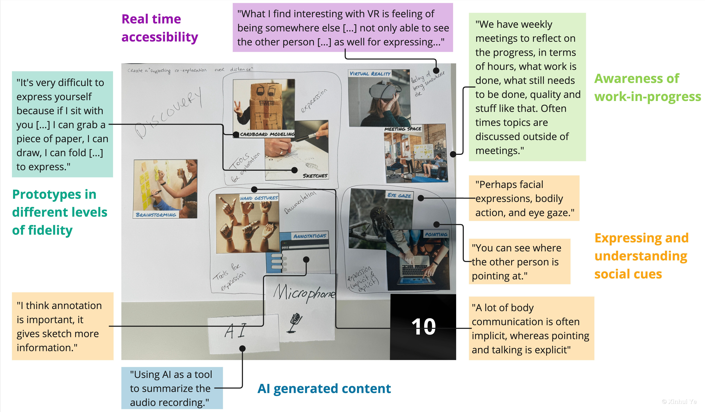
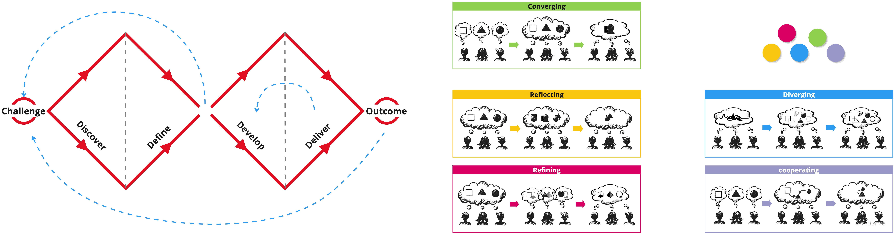
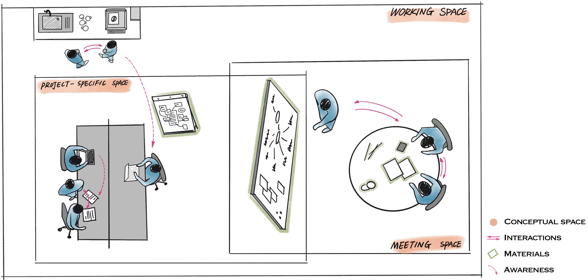

Two Talks at INTERACT

IFIP INTERACT, Brazil · two papers
I presented twice at the IFIP INTERACT conference in Brazil — once on the design knowledge I had built and validated with practitioners, and once stepping back to reflect on the methods of my PhD.
When Design Collaboration Goes Remote
Intermediate-Level Knowledge for Empowering Remote Co-exploration. This talk shared design knowledge I had validated with expert practitioners, and opened a lively discussion with peers about how to support designers working apart.


Reflecting on Methods
From Unfolding to Supporting Co-exploration in Collaborative Design (PhenoHCI'25 workshop). Here I stepped back to reflect on my PhD methods and the lessons phenomenology offered along the way.
The design guidelines behind the first talk
The starting point was a simple problem: when designers work apart, the easy back-and-forth of sketching and thinking together gets lost, and the tools they reach for rarely fill the gap. I wanted to turn that observation into practical guidance — what would actually help teams explore ideas together from a distance?
To answer it, I combined two perspectives: understanding designers' behaviours and needs through hands-on research, and reviewing the collaboration tools already out there through a systematic literature review.
I then ran a material-based workshop with experienced design professionals. Using a deck of inspiration cards, participants reflected on real experiences and designed speculative concepts for future collaboration tools. Analysing their concepts and rationales, I synthesised a design guideline — Designing Tools for Co-exploration (DTC).
The core argument: effective support for collaborative design should not rely on a single tool. It is better understood as an interconnected ecosystem of people, materials, interactions and digital environments, spanning the meeting space, the working space, and a shared project-specific space.



